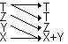

Single-number operations always modify the X, or bottom, register. The top register (T) is by default copied down to the register immediately below it following a dual-number maths operation, instead of inserting a zero in T. Example:

Default effect of addition.
You can choose to have zeros inserted instead in the configuration dialogue.